BRAND
CRAFTING THE WORLD’S
BEST COFFEE
-
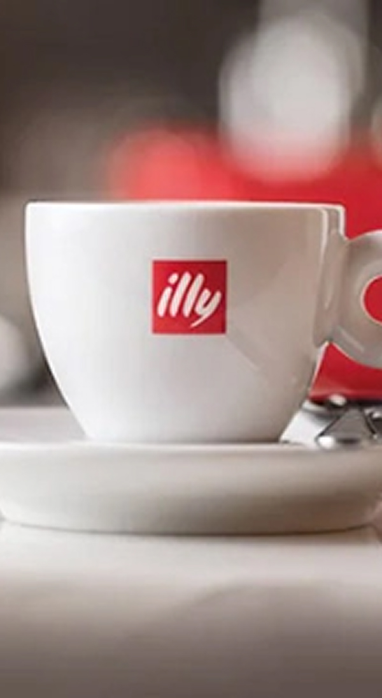
-
-
illyCaffè는 1933년 francesco illy에 의해 이탈리아 트리에스테에서 설립된 가족 경영 기업입니다.
illyCaffè는 전 세계적으로 높은 품질과 부드러운 맛으로 잘 알려져 있으며, 아라비카 품종 9가지로 구성된
독창적인 블렌드로 가정, 사무실, 호텔, 레스토랑, 커피숍 등 다양한 곳에서 매일 수백만 명의 사람들에게 즐거움을
선사합니다. illy는 완벽한 커피 한 잔의 즐거움을 중심으로 맛, 과학, 예술이 어우러진 세계를 만들어왔습니다.
illy가 만들어가는 커피 세계에는 커피 머신, 디자인 컵(일리 아트 컬렉션), 다양한 액세서리가 있으며, illyCaffè와 고품질 커피 문화를
이탈리아 및 전 세계에 전파하기 위해 1999년에 설립된 Università del Caffè가 있습니다.
-
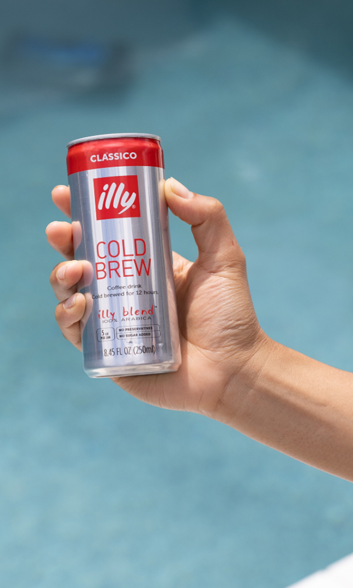
- 01. MISSION
- 자연이 제공하는 최고의 커피를 최첨단 기술과
지속 가능한 방식, 그리고 예술의 아름다움으로
더욱 완벽하게 만들어전 세계 사람에게 기쁨을
선사하는 것입니다.
-
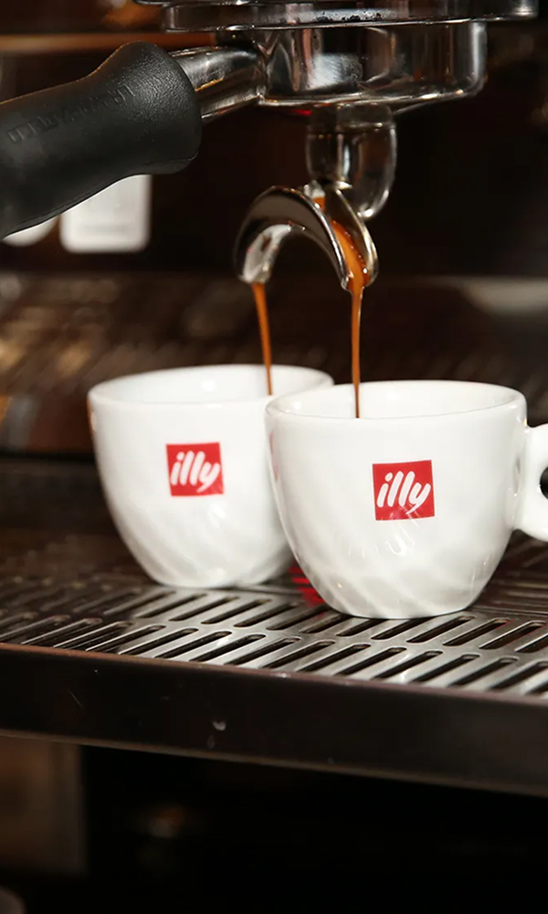
- 02. VISION
- illycaffè는 전 세계 커피 문화와 품질의 기준점이
되고자 합니다. 최고의 제품과 공간을 제공하고,
이를 통해 성장하며 프리미엄 커피 시장에서
선두 기업으로 자리 잡는 혁신적인 회사가 되는
것을 목표로 합니다.
-
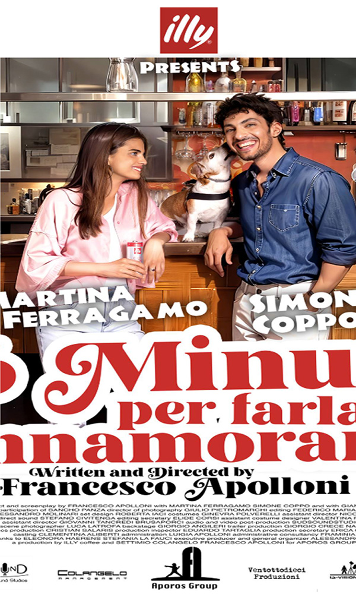
- 03. VALUES
- 첫번째, 윤리(Ethics), 지속 가능성,
투명성, 인권 존중, 개인 발전을 통해
장기적인 가치를 창출합니다. 두번째,
탁월(Excellence), 아름다움과
선(善)을 향한 사랑을 추구합니다.
-
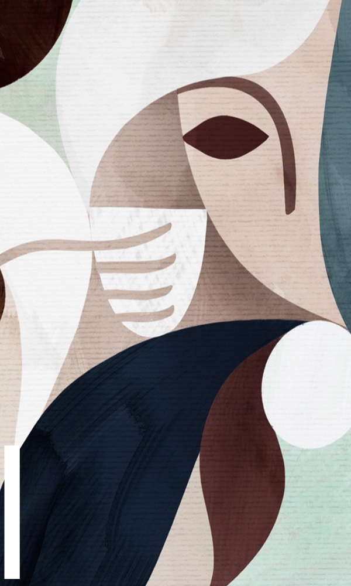
- 04. CUSTOM
- 에스프레소의 본고장 이탈리아 트리에스테에서
시작된 깊은 유래와 관습을 자랑합니다.
이탈리아 커피 문화의 정수를 계승하고 발전
시키고 있습니다.
-
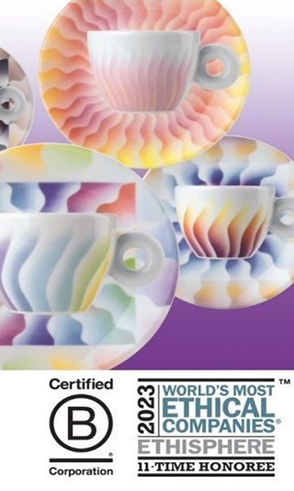
- 05. IDEAL
- 일리는 원두 선정부터 로스팅, 추출에 이르기까지
모든 과정에서 타협 없는 완벽함을 추구합니다.
최고의 아라비카 원두만을 선별하고, 독자적인
로스팅 기술로 일관되고 풍부한 맛과 향을 선사합니다.
-
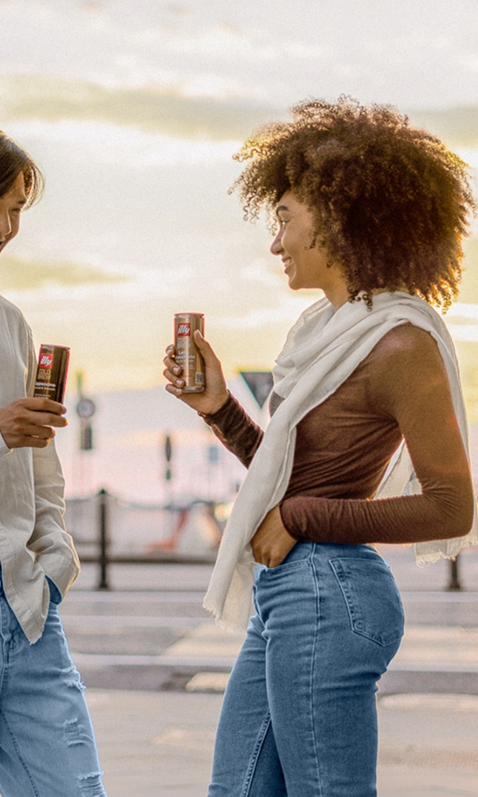
- 06. RESEARCH
- 일리는 커피 기술과 경험의 발전을 위해 끊임없이
연구하고 혁신합니다. 최고의 커피를 만들기 위한
추출 장비 개발부터 맛과 향을 보존하는 패키징 기술까지
과학적인 접근과 창의적 방법들을 연구합니다.
SUSTAINABLE BUSINESS MODEL
1933년 설립 이후, illycaffè는 경제적 및 재정적 목표를 사회적·환경적 측면과
통합하며 지속 가능한 비즈니스 모델을 지향해왔습니다.우리의 지속 가능성 선순환은
커피 생산국에서 시작되며,네 가지 핵심 포인트를 중심으로 지속 가능한 공급 전략에 기반합니다.
- 최고의 아라비카 커피 생산자들을 직접 선별하고 협력합니다.
- 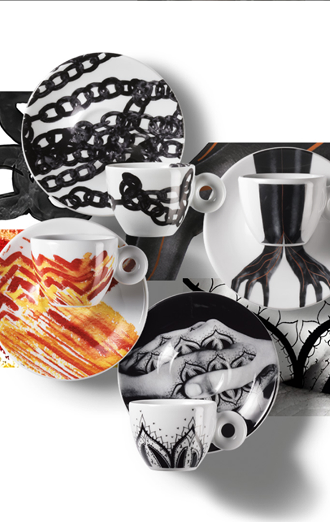
BENEFIT CORPORATION
2019년, illycaffè는 커피 공급망에 함께하는
모든 이해관계자를 중요시하고,기업으로서의 약속을 강화하며 베네핏 코퍼레이션이 되었습니다.
- 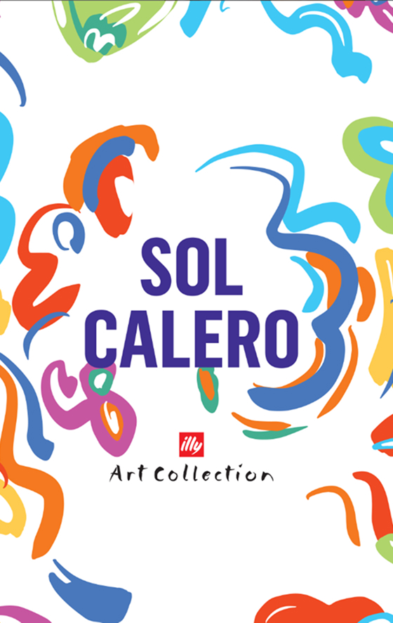
ILLY COFFEE B CORP®
윤리와 지속 가능성은 항상 우리
DNA의 일부였습니다. 전체 공급망에서 지속적인 가치를
창출함으로써 비즈니스 목표를 추구하는 선택은 우리가 추구하는 경제 모델입니다.
- 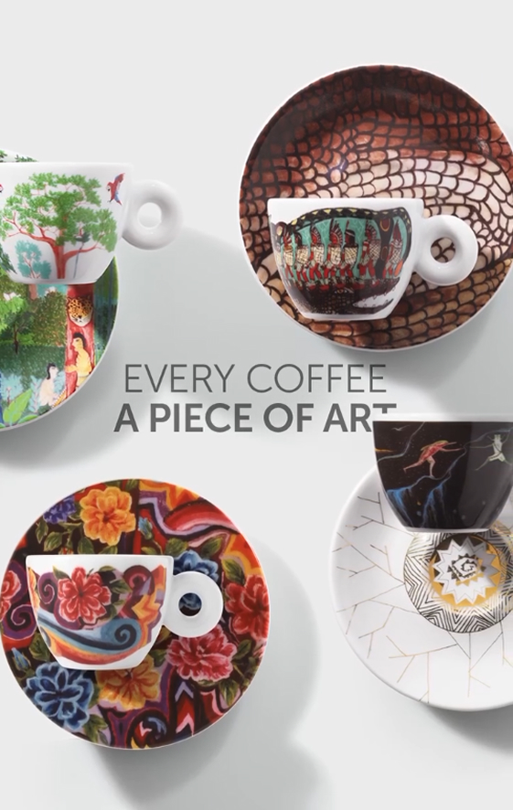
OUR RELATIONSHIP
우리는 전 세계 20개 이상의 국가에서
지속 가능한 방식으로 재배된 최고급 아라비카 나무를 선택합니다.
- 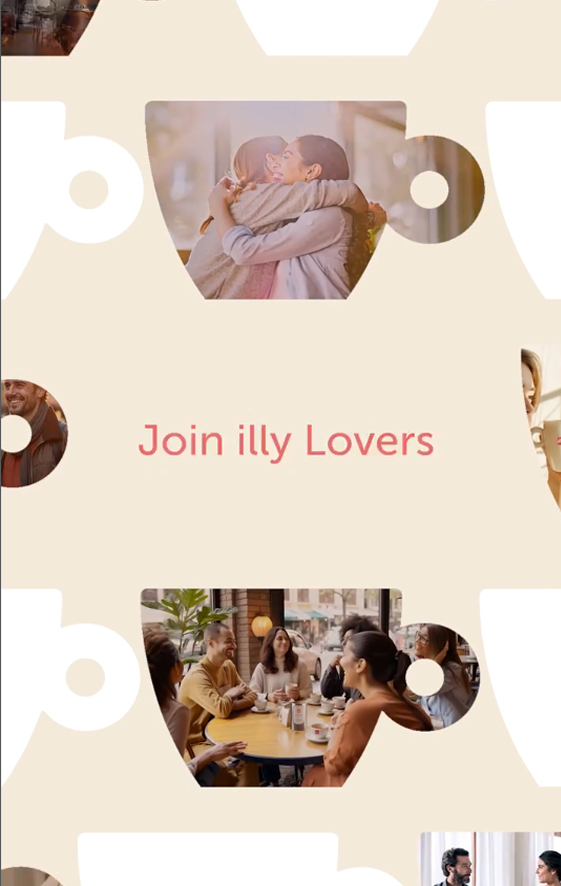
REGENERATIVE PRACTICES
우리는 기후 변화에 끼치는 영향을 완화하기 위해
토양과 생태계의 적응, 완화, 재생을 목표로하는 지속 가능한 농업 모델을 도입했습니다.
- 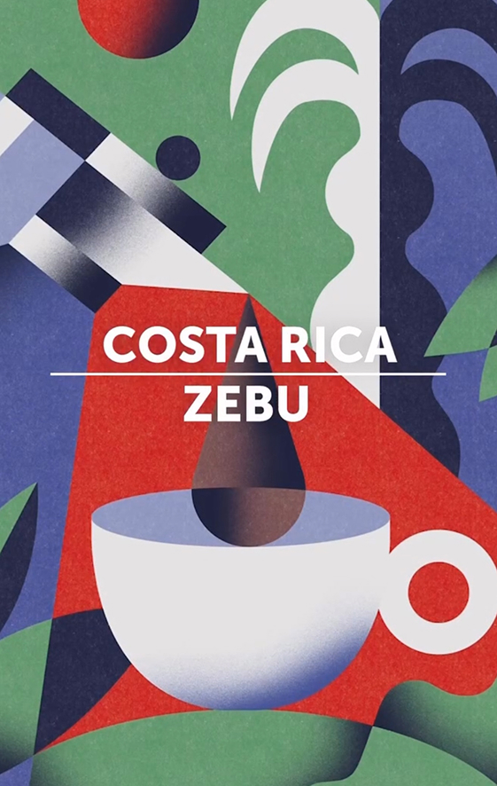
ART & CULTURE
일리는 단순히 커피를 마시는 것을 넘어, 커피를 통해 예술과 문화를 향유하는 특별한 경험을
제공합니다. 예술가들과의 협업으로 디자인된 감각적인 컵 시리즈부터 기획전까지 다양한 예술 활동을 보여줍니다.
- 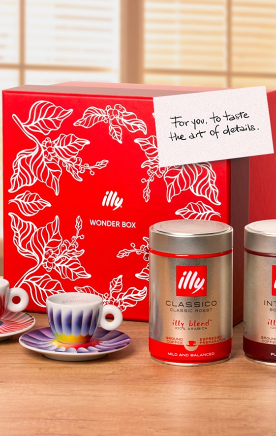
SENSORY JOURNEY
일리 커피는 단순한 맛을 넘어, 오감을 자극하는 특별한 '감각적 여정'을
제공합니다. 컵을 들었을 때 느껴지는 풍부한 아로마, 벨벳처럼 부드러운 크레마까지.
- 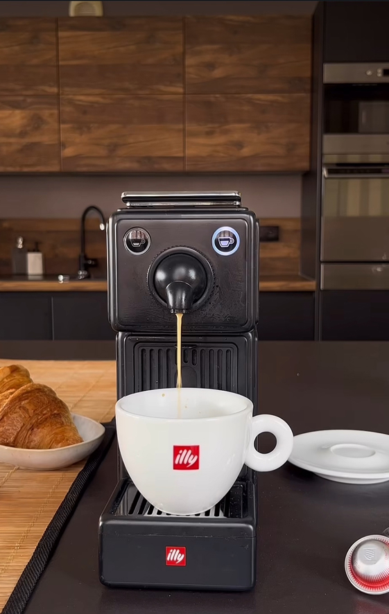
RGLOBAL COMMUNITY
전 세계 사람들을 하나로 연결하는 '글로벌 공동체'를 추구합니다.
커피 생산 농부들과의 상생을 통해 더 나은 품질을 도모합니다.